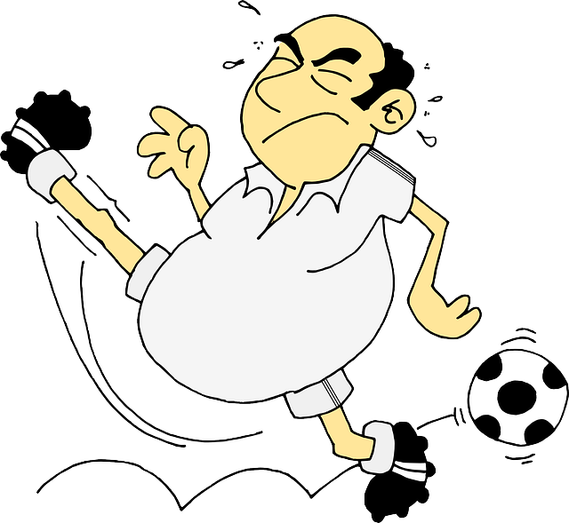
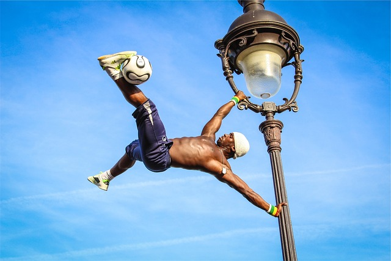

Soccer!!
Info about Soccer
Hello there! I am a 13 year old soccer player and I love the sport! Here is some interesting information about soccer.

Introduction
Soccer, also known as Football, is the world's most popular sport, captivating the hearts and minds of billions of people across the globe.With its simplicity, grace, and universal appeal, soccer has transcended boundaries and cultural barriers, becoming a unifying force that brings people together. In this essay, we will explore the beauty of soccer, its rich history, the passionate fandom it inspires, and its impact on individuals and society.
A Rich History
The origins of soccer can be traced back thousands of years to ancient civilizations, where variations of the game were played in different forms. However, modern soccer, as we know it today, emerged in the mid-19th century in England, with the establishment of standardized rules and the formation of football clubs. Since then, soccer has evolved into a global phenomenon, with international tournaments, professional leagues, and millions of dedicated players and fans.
The Beautiful Game
What makes soccer so captivating is its simplicity. All you need is a ball, a field, and a few players, and the game can be enjoyed by anyone, anywhere.The objective is straightforward: to score goals by maneuvering the ball into the opponent's net while preventing them from doing the same. Yet,within this simplicity lies a world of complexity, strategy, and skill.
Soccer is a game of finesse and technique. The precise control over the ball, the elegant dribbles, the accurate passes, and the acrobatic goals are a testament to the sheer artistry of the players. From the mesmerizing footwork of Lionel Messi to the thunderous strikes of Cristiano Ronaldo, soccer showcases the full spectrum of human athleticism and creativity.
Moreover, soccer is a game of teamwork and collaboration. It requires players to communicate, anticipate each other's moves, and synchronize their efforts to achieve a common goal. The synergy between players, the coordinated attacks, and the seamless transitions from defense to offense make soccer a beautiful ballet on grass.

Passionate Freedom
Soccer appeals extends far beyond the players on the field. The passion and fervor displayed by fans during matches are unparalleled. Whether it's the colorful banners, the deafening chants, or the rhythmic claps, the energy in a soccer stadium is electrifying. The sport has the power to unite people from diverse backgrounds, cultures, and nations, creating a shared experience that transcends linguistic and social barriers.

Conclusion
Soccer's enduring popularity can be attributed to its simplicity, beauty, and universal appeal. It has the power to captivate audiences, inspire lifelong devotion, and unite people from all walks of life. Whether it's the skillful displays on the field, the passionate fandom in the stands, or the positive impact it has on individuals and societies, soccer truly deserves its title as the beautiful game.